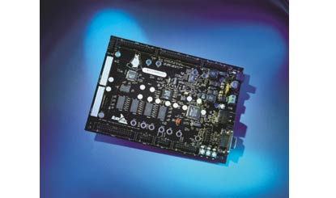

...making Linux just a little more fun!
Intel and Analog Devices Inc. (ADI) jointly developed the Micro Signal Architecture (MSA) core and introduced it in December of 2000. ADI's Blackfin processor functions as a DSP and a microcontroller. This device is currently used for multimedia applications.
This article provides an introduction to programming the BF533 STAMP board and is intended for readers with some experience in Linux as well as with embedded devices. It contains a basic description of using the board for embedded programming as I have done without any problem.
 The STAMP board features:
The BF533 STAMP runs uClinux - a Linux port for embedded devices. It has soft real-time capabilities, meaning that it cannot guarantee a specific interrupt or scheduler latency.
The STAMP board has been specifically designed to support the development and porting of open source uClinux applications and includes the full complement of memory along with serial and network interfaces. The STAMP uClinux Kernel Board Support Package (BSP) includes a CD with a recent copy of the open source development tools, the uClinux kernel, and the documentation. For more details visit http://blackfin.uclinux.org.
The uClinux kernel provides a hardware abstraction layer. The uClinux Application Programming Interface (API) is identical for all processors which support uClinux, allowing code to be easily ported to a different processor core. When porting an application to a new platform, programmers only need to address the areas specific to a particular processor - normally, this means only the device drivers.
We have to note the following components of our development board:
The development workstation is essentially a Linux box which should have
There are two potential interconnections between the workstation and the target:
bash# minicom -m -s /dev/ttyS0
From the configuration menu within Minicom, set the serial port connection to
Now Save the configuration and choose Exit.
Install the binutils and the GCC tools on your machine:
[ Note: 'rpm' is RedHat-specific. Use the appropriate package manager for your distribution to install the latest 'bfin-gcc' version; if your distribution does not have one, use the 'alien' utility to convert this RPM to your required format. -- Ben ]
bash# rpm -ivh bfin-gcc-3.4-4.1.i386.rpm
You may not find the same version of GCC tools on the CD. I had to download the latest version since the one provided with CD did not contain the required tools (e.g., the C compiler for building programs on uClinux.) You may download the RPM from here. Or you can visit the Blackfin website to download the toolchain yourself.
In user mode, export the path for the tools:
bash# export PATH=/opt/uClinux/bfin-elf/bin:/opt/uClinux/bfin-uclinux/bin:$PATH
bash# bunzip2 uClinux-dist.tar.bz2
tar -xvf uClinux-dist.tar
Traditionally, development environments and programming languages have always begun with the 'Hello World' program; we'll follow the precedent.
Copy the following into a file called 'hello.c':
#include<stdio.h>
int main() {
printf("Hello, Welcome to Blackfin uClinux!!\n");
return 0;
}
The next step is to compile 'hello.c' on you host PC:
bash# bfin-uclinux-gcc -Wl,elf2flt hello.c -o hello
The resulting executable is named hello.
Note that the bfin-uclinux-gcc compiler is used; this compiler is used to compile programs that run on the uClinux operating system. It automatically links our program with the uClinux run time libraries, which in turn call the uClinux operating system when required ( for example ) to print to the console. The compiler collection for the Blackfin processor also includes another compiler, bfin-elf-gcc, which is used to compile the actual uClinux operating system and uses a different set of libraries. If you want to try porting other RTOSs to Blackfin, you will have to use bfin-elf-gcc.
Now we need to set up the Ethernet port on the Linux box; we'll set its IP address to 192.168.0.2. After booting the uClinux kernel on the STAMP board, you will have to configure its Ethernet interface as well; at the bash prompt of the STAMP, type the following:
root:~># ifconfig eth0 192.168.0.15 up
At this point, the Ethernet link should be up. We can use FTP to upload the 'hello' program from the host to the board. At the bash shell prompt of the linux workstation type the following:
bash# ftp 192.168.0.15
Give the username and password as root and uClinux. Send the 'hello' executable to the STAMP board.
Now modify the permissions and run:
root:~> chown 777 hello root:~> ./hello Hello, Welcome to Blackfin uClinux!!
The Blackfin processor does not have an MMU, and does not provide any memory protection for programs. This can be demonstrated with a simple program:
// test.c
int main ()
{
int *p;
*p=5;
}
Compile 'test.c' using our native C compiler. Try to run the resulting executable, and you'll end up with a segmentation fault.
Now, compile the program using 'bfin-uclinux-gcc' as I described above. Send the executable to the STAMP board using FTP, change the file permissions, and run it.
This time, it should run without a segmentation fault. Due to this, an unprivileged process can cause an address error, can corrupt kernel code, and result is obvious. This is not a limitation of the Blackfin architecture, but simply demonstrates that uClinux is designed to support devices without an MMU.
This is all I know well about uClinux on Blackfin. I have to look deeper into uClinux and I shall try to include more next time!
For more information, please visit http://blackfin.uclinux.org.
Talkback: Discuss this article with The Answer Gang
I'm currently doing my final semester as a Btech in Computer Science and Engineering in MES College of Engineering, Kuttipuram, Kerala, India. I am really fond of everything about Linux operating systems, maybe because I want to know more about it, and I spend most of the time on my PC for the same. My other areas of interest include reading, web surfing, and listening to music.